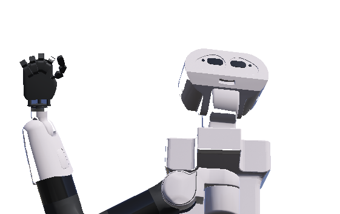

-
Quem é Boisu?
Boisu é um robô, na verdade ele ainda é uma simulação de robô, derivado do tiago titanium, robô construido pela pal robotics, seu objetivo é introduzir às pessoas os sinais de libras, ou seja, ele é capaz de fazer frases em libras como "Oi eu sou Boisu"
-
Logica pensada na programação
Nessa parte explicaremos como o Boisu faz realmente um sinal de libras, acreditamos que quem é programador gostaria de saber um pouco mais a fundo como funciona o nosso grandinho Boisu, a logica pensada, foi em base com o braço do corpo humano, onde para se movimentar o braço o cerebro envia sinais nervosos para o local, fazendo este se movimentar para posição desejada, no robo foi pensado da mesma forma, mas convertido em numero, onde cada letra teria dados numericos especificos para cada motor do braço, fazendo um laço de repetição interagir com os motores, enviando cada dado para cada motor imitando o cerebro humano.

-
Veja o Boisu
Veja ao lado um gifzinho de boisu falando em libras